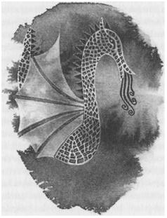

BEŞ: PENDOR EJDERHASI

Roke'un batısında, iki büyük kara parçası olan Hosk ve Ensmer adaları arasında, topluluk halinde Doksan Adalar bulunur. Roke'a en yakın olan ada Serd adası, en uzak olan ada da neredeyse Peln Denizi'nde bulunan, Seppish adasıdır. Bu adaların toplam sayısının doksan olup olmadığı sorusu ise, hâlâ cevaplandırılamamıştır; çünkü üzerinde tatlısu bulunan adaları sayacak olursanız, yetmiş ada çıkar; yok tüm kaya parçalarını saymaya kalkarsanız, yüzü de geçersiniz; sonra gelgitler de sonucu etkiler. Adacıklar arasındaki kanallar çok dardır ve İç Deniz'in yumuşak gelgitleri, bunları aşındırır, dolanır; yükseldiğinde çok yükselir, alçaldığında da çok sığlaşır; öyle ki, sular yükseldiğinde üç adacığın olduğu bir yerde, sular alçalınca sadece tek bir ada kalır. Gelgitlerin tüm tehlikelerine rağmen yürümesini öğrenen her çocuk, aynı zamanda kürek çekmesini de öğrenir, kendi küçük kayığına sahip olur. Ev kadınları, komşularıyla ruşvaş çayı içmek için, kanalı kayıklarıyla geçerler; seyyar satıcılar mallarını satmak için, çektikleri küreğin ritmiyle bağırırlar. Tüm sokaklar tuzlu suyla doludur. Bu sokakların önü, sadece, daralan yerlerde, evden eve, turbi adı verilen bir çeşit balığı yakalamak için gerilmiş ağlarla kesilir. Doksan Adalar'ın servetini, bu balıktan elde edilen yağ oluşturur. Bu adalarda ancak birkaç tane köprü vardır; ve hiç büyük yerleşim merkezi yoktur. Her ada çiftliklerle ve balıkçı kulübeleriyle ıkış tıkıştır; ve bunların her on-yirmi kadarı bir araya gelip, bir kaza oluştururlar. Bu kazalardan biri de, en batıda, İç Deniz'e değil de, sadece, ejderhaların yağmaladıkları bir ada olan Pendor'un bulunduğu, oradan sonra da Batı Bölgesi'nin terkedilmiş sularının yer aldığı, Adalar Diyarı'nın ıssız köşesine, bomboş duran okyanusa bakmakta olan Aşağı Toming'dir.
Kazanın yeni büyücüsü için bir ev hazırlanmıştı. Yeşil arpa tarlaları arasındaki bir tepenin üzerine yapılmış olan ev, o sıralar kırmızı çiçekler açmış pendik ağaçlarından bir koruyla batı rüzgârlarından korunuyordu. İnsan, evin kapısından, saz damlı diğer evleri, koruları, bahçeleri; korularıyla, evleriyle, bahçeleriyle diğer adaları ve adalar arasında kıvrıla kıvrıla uzanan, sayısız, pırıl pırıl su kanallarını seyredebiliyordu. Penceresi olmayan, toprak zeminli bir fakir eviydi, yine de Ged'in doğmuş olduğu evden daha iyi bir evdi. Roke Adası'ndan gelecek olan büyücüden çekinen Aşağı Toming'in adalı halkı, bu mütevazı evden dolayı özür dilediler. "Yapılarda kullanmak için taşımız yok," dedi bir tanesi; "Açlıktan ölmesek de hiçbirimiz zengin değiliz," dedi bir başkası; bir diğeri de, "En azından kuru olacak, damını kendi ellerimle aktardım efendim," dedi. Ged'in gözünde, evin bir saraydan farkı yoktu. Kazanın yöneticilerine, içtenlikle teşekkür etti; böylece on sekizi de kendi kayıklarına binip, ev kadınlarına ve balıkçılara, yeni büyücünün çok az konuşan ama konuştu mu da kibirle değil, adaletle konuşan, asıkyüzlü, tuhaf bir genç olduğunu anlatmak için, kendi adalarına gitti.
Ged'in, bu ilk büyücülük işinde pek kibirlenecek bir durumu yoktu belki de. Roke Adası'nda yetişen büyücüler genellikle, soylulara hizmet etmek için, büyük bir saygıyla karşılandıkları şehirlere ve şatolara giderlerdi. Normal koşullarda, Aşağı Toming'deki bu balıkçılara, balık ağlarını efsunlayacak, yeni kayıklarını okuyacak, hayvanların ve insanların hastalıklarını iyi edecek bir cadı veya sihirbaz yeterli olurdu. Fakat birkaç yıl önce, Pendor Ejderhası yumurtlamıştı: Şimdi, Pendor Leventleri'nin kulelerinin yıkıntıları arasında, pullu karınlarını mermer basamaklarda ve buradaki kırık kapılar arasında sürükleye sürükleye dolaşan, dokuz ejderhanın yattığı söyleniyordu. Birkaç yıla kadar, biraz daha büyüdüklerinde ve iyice acıktıklarında, bu ölü adada yiyecek bir şeyler bulamayınca etrafta uçacaklardı. Daha şimdiden, Host adasının güneybatı kıyılarında dördünün uçtuğu görülmüş; yere inmemişler fakat koyun sürülerini, ahırları ve köylerin durumunu keşfe çıkmışlardı. Bir ejderha çok yavaş acıkırdı ama acıktı mı da, onu doyurmak çok zordu. Bu nedenle Aşağı Toming adalarının halkı, Roke'a bir elçi yollayarak, kendilerini batıda beklemekte olan felaketten kurtarması için, bir büyücü göndermelerini rica etmiş, Başbüyücü de korkularını yerinde bulmuştu.
"Burası rahat bir yer değil," demişti Başbüyücü, Ged'i büyücü yaptığı gün. "Ün kazanamazsın, zengin olamazsın, hatta tehlikesi bile yok. Gidecek misin?"
"Giderim," diye cevap vermişti Ged, sadece itaat etmek kaygısıyla değil. Roke Tepesi'ndeki geceden sonra, şöhrete ve gösterişe olan düşkünlüğü, tam tersine dönmüş, artık tam aksi şeyleri ister olmuştu. Artık, kuvvetinden emin olamıyor ve gücünü deneyebileceği ortamlardan kaçınıyordu. Yine de ejderhalardan söz edilmesi, ilgisini çekmişti. Gont'ta yüzlerce yıldır ejderhalar görülmemişti; ayrıca, büyüsü nedeniyle Roke'un yakınına, bucağına ejderha gelemezdi; o yüzden orada da ejderhalar sadece öykülerde ve türkülerde anlatılan sorunlardı; sözleri edilen fakat hiç görülmeyen varlıklar. Ged, Okul'da, ejderhalarla ilgili öğrenebileceği her şeyi öğrenmişti. Fakat insanın ejderhaları derslerde okuması başka şeydi, karşısında görmesi başka. Önünde böyle bir olanak olunca, tüm kalbiyle cevap verdi, "Giderim."
Başbüyücü Gensher, başıyla onayladı ama sıkıntılı bir ifadesi vardı. "Söyle bakalım," dedi en sonunda, " Roke'tan ayrılmaya korkuyor musun? Yoksa buradan ayrılmaya istekli misin?"
"Her ikisi de efendim."
Gensher tekrar başını salladı. "Seni buradan, bu güvenceli yerden yollamakla iyi edip etmediğimi bilemiyorum," dedi yavaşça. "Önündeki yolu göremiyorum. Karanlıklar içine gizlenmiş. Ayrıca kuzeyde bir güç var, seni mahvedecek bir güç; fakat ne olduğunu, nerede olduğunu, geleceğinde mi, geçmişinde mi olduğunu söyleyemem: Her şey karanlıklar içinde. Aşağı Toming'den adamlar gelince ilk olarak seni düşündüm; orası, gücünü toplamak için zaman bulabileceğin, güvenceli bir yere, ayakaltı olmayan bir yere benziyor. Yine de, sonunda nereye varacağını veya senin için güvenceli bir yerin varolup olmadığını bile bilemiyorum. Seni karanlıklara yollamak istemiyorum..."
İlk başta, çiçek açan ağaçların altındaki bu ev, Ged'e yeterince canlı bir yer gibi gelmişti. Burada yaşayıp, sık sık gökyüzünün batı yakasını gözledi ve büyücü kulaklarını pullu kanatlardan çıkacak olan seslere açık tuttu. Fakat hiçbir ejderha gelmedi. Ged iskelesinden balık avladı; bahçesiyle oyalandı. Bu güzel yaz günlerinde, bir yandan otakı yanında uyurken veya papatya ve ot ormanında fare avlarken, o, pendik ağaçlarının altında oturup, bütün günlerini Roke'tan getirmiş olduğu İrfan Kitapları'nda geçen bir sayfa, bir satır veya bir kelime üzerinde düşünerek geçiriyordu. Aşağı Torning halkına, ondan yardım istedikleri zamanlar, şifacı ve iklimci olarak hizmet veriyordu. Bir büyücünün, bu tür basit işlerle uğraşmaktan utanabileceği aklına bile gelmiyordu, çünkü kendisi de bu insanlardan daha fakir insanlar arasında, bir cadı çocuğu olarak yetişmişti. Öte yandan halk, gerek Bilgeler Adası'ndan gelen bir büyücü olduğundan, gerekse sessizliği ve yüzündeki yaralar nedeniyle, ondan korktukları için, az şey istiyordu. Genç olmasına rağmen, onda insanı tedirgin eden bir şey vardı.
Yine de, o kendisine bir arkadaş edinmişti; doğu tarafındaki adada yaşayan bir kayık ustası. Adı Pechvarry'ydi. İlk olarak Ged' in iskelesinde, Ged onun küçük bir yelkenlinin direğini dikişini seyretmek için durduğunda tanışmışlardı. Pechvarry gülümseyerek büyücüye bakıp, "Bir aylık iş hemen hemen bitti. Herhalde siz bunu bir dakikada, bir tek sözünüzle bitirirdiniz, öyle değil mi?" demişti.
"Olabilir," dedi Ged, "ama büyüyü yapmaya devam etmezsem, öbür dakikada da batardı. Fakat eğer istersen..." Durdu.
"Neyi, efendim?"
"Bu çok şirin küçük bir tekne. Her şeyi de tamam. Ama eğer istersen, onu daha da sağlam yapmak için bir bağlama büyüsü, veya denizden eve dönmesini sağlamak için bir bulma büyüsü yapabilirim."
Ged, zannatkârı gücendirmemek için, çekine çekine konuşmuştu; fakat Pechvarry'nin yüzü aydınlandı. "Tekneyi oğluma yapıyorum beyim, eğer dediğiniz büyüleri yaparsanız, bu çok büyük bir iyilik, çok dostça bir davranış olur." Ve hemen iskeleye atlayıp, Ged'in ellerine sarılarak ona teşekkür etti.
Bu olaydan sonra, sık sık bir araya geldiler. Ged, büyüdeki ustalığını, Pechvarry'nin kayıkları onarırken veya yaparken gösterdiği elustalığıyla birleştiriyor, karşılığında da Pechvarry'den, bir kayığın nasıl yapıldığını ve büyünün yardımı olmadan bir yelkenlinin nasıl idare edilebileceğini öğreniyordu. Her nedense, Roke'ta normal yöntemlerle yelkenli kullanımının üstünde pek durulmamıştı. Ged iyi bir denizci oluncaya ve Pechvarry ile aralarındaki dostluk iyice pekişinceye kadar, sık sık Ged, Pechvarry ve küçük oğlu İoeth, kanallarda veya koylarda, bir gün o kayıkla kürek çekerek, bir gün bu yelkenliyle yelken açarak, gezindiler durdular.
Sonbaharın sonlarına doğru bir gün kayık ustasının oğlu hastalandı. Annesi, Tesk Adası'nda oturan, hastalıkları iyi etme konusunda becerisi olan bir cadıya haber saldı. Birkaç gün her şey yolunda gitti. Sonra, fırtınalı bir gece yarısında, Pechvarry Ged'in kapısını yumruklayarak, gelip çocuğunu kurtarması için ona yalvardı. Ged hemen onunla birlikte kayığa koştu; beraberce kayık ustasının evine doğru kürek çektiler. Orada Ged, çocuğu ot yatağının üzerinde yatarken gördü; annesi sessizce yanıbaşına çömelmişti. Cadı kadın da, korli kökü tütsüsü yapıp, Nagian ilahileri söylüyordu; elinden gelenin en iyisi buydu. Fakat Ged'e, "Büyücü Hazretleri, çocuğun ateşi kızıl ateş; çocuk bu gece bu ateş yüzünden ölecek," dedi.
Ged diz çöküp elini çocuğun üstüne koyunca, aynı şeyi düşünüp, bir an elini geri çekti. Uzun hastalık döneminin son aylarında, Şifacı Usta ona şifa bilgilerinin bir çoğunu öğretmişti. Bu bilgiler de, şu kuralla başlar ve biter: Yarayı tımar et ve hastalığı iyileştir, ama bırak ölmekte olan ruh gitsin.
Çocuğun annesi, Ged'in yaptığı hareketi görüp anlamını anlayınca, çaresizlik içinde bağıra bağıra ağlamaya başladı. Pechvarry, "Çevik Atmaca Hazretleri onu kurtarır, hanım. Ağlamana gerek yok! Artık geldi ya, oğlanı kurtarır," diyerek kadına doğru eğildi.
Ananın feryatlarını duyan ve Pechvarry'nin de kendisine olan güvenini gören Ged, onları nasıl hayal kırıklığına uğratabileceğini bilemedi. Kendi koyduğu teşhise güvenmedi; eğer ateş düşürülürse belki de çocuk kurtarılabilir diye düşündü. "Elimden geleni yapacağım Pechvarry," dedi.
Dışarıdan yeni getirmiş oldukları soğuk yağmur suyuyla oğlanı yıkadı ve ateş düşürücü büyülerden birini yapmaya başladı. Büyü ne etkisini gösterdi, ne de bir işe yaradı; bir an için çocuğun kollarında ölmekte olduğunu düşündü.
Hemen tüm gücünü toplayarak ve kendisini hiç düşünmeden, çocuğun ruhunu geri getirebilmek için, kendi ruhunu çocuğun ruhunun arkasından yolladı. Çocuğa adıyla seslendi: "İoeth!" İçten, zayıf bir cevabın geldiğini düşünerek, bir kez daha seslendi ve çocuğun peşine düştü. Sonra küçük oğlanın ilerde, uzakta, engin bir tepenin karanlık yokuşundan aşağıya, hızla koştuğunu gördü. Etrafta hiç ses yoktu. Tepenin üstünde gördüğü yıldızlar, şimdiye kadar hiç görmediği yıldızlardı. Yine de takımyıldızları isimleriyle biliyordu: Deste, Kapı, Dönen, Ağaç. Bunlar, o hiç batmayan yıldızlardı, gelen günün ışığıyla solmayan yıldızlar. Ölmekte olan çocuğu, fazla izlemişti.
Bunun bilincine vardığında, kendisini karanlık yamaçta buldu. Geriye dönüş zordu, hem de çok zor. Yavaş yavaş geri döndü. Yavaş yavaş, tepeye geri tırmanmak için bir ayağını ileri attı, sonra diğerini. Adım adım ilerledi, her adım, azimle atılıyordu. Ve her adım bir öncekinden daha zordu.
Yıldızlar hareket etmedi. Kuru ve sarp zeminin üzerinde rüzgâr esmedi. Karanlığın tüm engin krallığında, bir tek o hareket etti; yavaşça, tırmanarak. Tepenin başına gelince, burada alçak bir taş duvar gördü. Fakat duvarın öbür yanında, bir gölge ona doğru dönmüş duruyordu.
Gölgenin, ne insan gibi, ne de hayvan gibi bir şekli vardı. Gölge şekilsizdi, belli belirsiz görünüyordu ama Ged'e bir şeyler fısıldıyordu. Fısıltısında kelimeler yoktu. Ve gölge Ged'e doğru uzandı. Ve gölge, yaşayanların tarafında duruyordu; Ged ise ölülerin tarafında.
Ya tepeden aşağıya ölülerin ışıksız şehirlerine ve çorak topraklarına gidecek, ya da, şekilsiz şeytani şeyin kendisini beklediği duvardan atlayarak, tekrar yaşama geri dönecekti.
Ruh asası, Ged'in elindeydi; asasını yükseklere kaldırdı. Bu hareketle gücü geri geldi. Dosdoğru, gölgeye doğru, alçak taş duvarın üzerinden atlarken, elindeki asa birden beyaz bir ışıkla yanmaya başladı; bu loş yerde kör edici bir ışıkla parladı. Ged atladı, düştüğünü hissetti; başka bir şey de görmedi.
Bu arada Pechvarry'nin, karısının ve cadının gördükleri ise şunlardı: Genç büyücü, büyüsünün ortasında durmuş ve çocuğu bir süre kıpırdamadan ellerinde tutmuştu. Sonra İoeth'i yavaşça şiltenin üzerine bırakmış, doğrulmuş; elinde asası sessizce durmuştu. Derken birdenbire asasını havaya kaldırmıştı, asa beyaz bir ateşle yanıyordu; adeta avucunda bir şimşek tutuyordu Ged. O bir anlık ateşte evdeki tüm eşyalar ansızın garip bir şekilde belirginleştiler. Gözlerinin kamaşması geçince, genç adamın, çocuğun ölü olarak yattığı ot yatağın yanında, toprak zeminin üzerinde yüzükoyun uzanmış olduğunu gördüler.
Pechvarry'ye büyücü de ölmüş gibi geldi. Karısı ağladı; ama o tamamen sersemlemişti. Fakat cadının, büyücülükle ve gerçek bir büyücünün öbür dünyaya gidişiyle ilgili kulaktan dolma bilgisi vardı; Ged'e, her ne kadar soğuk ve hareketsiz yatsa da, bir ölü gibi değil, hasta veya trans halindeki bir adam gibi davranılmasını sağladı. Ged'i evine taşıdılar; uyanıp uyanmayacağını izlemesi için, yanına yaşlı bir kadın bıraktılar.
Küçük otak, yabancılar eve geldiğinde her zaman yaptığı gibi, evin çatı kirişinde saklanıyordu. Yağmur duvarları dövüp ateş geçerken ve akşam da yavaş yavaş ilerlerken, hayvan orada durmaya devam etti, ta ki yaşlı kadın ateşin yanıbaşında uyuyakalıncaya kadar. O zaman otak aşağı indi ve yatakta kaskatı ve hareketsiz yatmakta olan Ged'in yanına gitti. Ellerini ve bileklerini, sabırla uzun uzun, kahverengi bir yaprağa benzeyen kuru diliyle yalamaya başladı. Ged'in başının yanına çömelerek şakaklarını, yaralı yanaklarını ve yavaşça, kapalı gözlerini yaladı. Ve Ged yavaş yavaş, o yumuşak dokunuşla kendine geldi. Daha önce veya o an, nerede olduğunu veya tepesindeki soluk ışığın ne olduğunu, bilemeden uyandı. Işık, dünyaya doğmakta olan güneşin ışığıydı. Sonra, otak her zamanki gibi, onun omuzuna yaklaşarak kıvrıldı, uyudu.
Daha sonra, Ged o geceyi düşündüğünde, böyle ruhu kaybolmuş halde yatarken, kimse kendisine dokunmamış olsa, kimse onu şöyle veya böyle geri çağırmamış olsa, ruhunun sonsuza kadar kaybolabileceğini fark etti. Onu geri çağıran sadece, canı yanmış dostunu rahatlatmak için yalayan hayvanın, içgüdüsel dilsiz bilgeliğiydi. Yine de o bilgelikte, Ged kendi gücüne yakın bir şeyler buldu, büyücülük kadar derin olan bir şeyler. O andan itibaren, bilge kişinin, kendisini, konuşabilseler de konuşamasalar da, yaşayan diğer varlıklardan ayırmayan kişi olduğuna inandı. Daha sonraki yıllarda da, hayvanların gözlerinden, kuşların uçuşlarından, ağaçların ağır ve ulu hareketlerinden; konuşamayan bu varlıklardan öğrenebileceği şeyleri öğrenmek için çok çalıştı.
İlk defa olarak yara almadan, sadece bir büyücünün gözleri açık olarak yapabileceği şeyi başarmıştı: Sınırı geçip geri dönmeyi. Böyle bir şeyi, en büyük büyücüler bile, bazı tehlikeleri göze almadan yapamazlar. Fakat geri döndüğünde, onu korku ve keder bekliyordu. Keder, arkadaşı Pechvarry içindi, korku ise kendisi için. Şimdi Başbüyücü'nün onu göndermeye neden korktuğunu; ve büyücünün bile ileriyi görme yetisini karartan ve perdeleyen şeyin ne olduğunu anlamıştı. Çünkü zaten onu bekleyen şey, karanlığın kendisiydi; ismi olmayan, dünyaya ait olmayan bir varlık; yarattığı veya salıverdiği, bir gölge. Bir ruh olarak, tüm bu yıllar boyunca, onu ölüm ile yaşamın sınırındaki duvarda beklemişti. Sonunda da Ged'i orada bulmuştu. Ged'e yaklaşabilmek, Ged'in gücünü elde edebilmek, yaşamını emebilmek ve Ged'in etine bürünebilmek için, artık yola koyulmuş olmalıydı.
Daha sonraları Ged, rüyasında o şeyi kafası ve yüzü olmayan, ayı gibi bir şey olarak gördü. Evin duvarlarında el yordamıyla kapıyı arıyordu. O şeyin açtığı yaralar geçtiğinden beri böyle rüyalar görmemişti. Uyandığı zaman kuvvetsiz kalmıştı, üşüyordu. Yüzündeki ve omuzundaki yaralar geriliyor ve ağrıyordu.
Artık kötü bir dönem başlamıştı. Rüyasında ne zaman gölgeyi görse, ya da onun hakkında çok düşünse, hep aynı soğuk dehşeti yaşıyordu: Duyuları ve gücü onu terk ettiklerinden, aptallaşıyor ve yolunu şaşırıyordu. Korkaklığına çok hiddetleniyordu ama bu bir işe yaramıyordu. Kendisini korumanın yollarını arıyordu ama hiç çaresi yoktu: O şey etten kemikten değildi, canlı değildi, bir ruh da değildi, ismi yoktu; Ged'in kendisinin ona vermiş olduğu, güneşin ışıdığı dünyanın kanunlarının dışındaki o korkunç güçten başka hiçbir varlığı yoktu. Onun hakkında bütün bildiği, kendi yaratığı olduğu için, o şeyi kendisine doğru çektiği ve o şeyin kendisini etkisi altına almaya çalışacağı idi. Fakat, henüz kendisine özgü bir biçimi olmadığı için, hangi biçimde geleceğini, nasıl geleceğini ve ne zaman geleceğini bilmiyordu.
Evinin ve yaşadığı adanın çevresini, bildiği bütün engelleyici büyülerle çevirdi. Bu tür büyü duvarlarının durmadan yenilenmeleri gerekir; sonunda Ged de, bütün gücünü bu duvarlara harcarsa, ada halkına hiçbir yaran dokunmayacağını fark etti. Eğer Pendor'dan bir ejderha gelirse, o zaman bu iki düşman arasında ne yapabilirdi?
Tekrar bir rüya gördü; ama bu kez rüyasında gölge, evin içinde kapının yanındaydı; karanlığın içinden ona doğru, Ged'in anlayamadığı birtakım sözcükler fısıldayarak, ilerliyordu. Dehşet içinde uyandı; gölgenin hiçbir yerde olmadığına emin oluncaya kadar, havada yanmakta olan tılsımışığını küçük evin her köşesine yolladı. Sonra ateşin korlarının üzerine odun attı ve ateşin ışığında düşünceli düşünceli oturarak, sazdan yapılmış damın ve çıplak ağaçların arasında gezinmekte olan sonbahar rüzgârını dinledi. İçinde eski bir öfke yeniden kabardı. Çaresizlik içindeki bu bekleyişe, küçük bir adada kapana kısılmış gibi, işe yaramaz kilit büyüleri mırıldanıp, oturup kalmaya boyun eğmeyecekti. Ama yine de bu kapandan kolay kolay kurtulamıyordu: Bunu yapmak ada halkının güvenini kötüye kullanmak ve onları yakınlarındaki korkunç ejderhaya karşı savunmasız bırakmak demekti. Yapılabilecek tek şey kalıyordu.
Ertesi gün, balıkçıların arasından geçerek, Aşağı Toming'in en büyük iskelesine gitti; orada Adalıların Başı'nı bulup, ona, "Buradan ayrılmam gerekiyor. Ben büyük bir tehlike içindeyim ve sizi de tehlikeye atıyorum. Gitmem gerekiyor," dedi. "O yüzden, sizden, Pendor'a gidip ejderhaları yok etmek için izin istiyorum. Böylece size karşı görevimi yerine getirmiş olacağım; o zaman rahatça ayrılabilirim. Yok eğer başaramazsam, o zaman ejderhalar buraya geldiklerinde de başaramam demektir. Öyle bir şeyin de sonradan öğrenileceğine, şimdiden bilinmesi daha iyi."
Adalı, ağzı bir karış açık dinledi Ged’i. "Çevik Atmaca Hazretleri," dedi, "orada tam dokuz tane ejderha var!"
"Dediklerine göre, sekizi henüz küçükmüş."
"Fakat yaşlıları..."
"Size buradan gitmem gerektiğini söylüyorum. Eğer başarabilirsem, önce sizi ejderha tehlikesinden kurtarmak için izin istiyorum."
"Nasıl isterseniz beyim," dedi Adalı, ümitsizce. Orada bulunup da konuşulanları dinleyen herkes, bunun genç büyücülerinin bir deliliği, delice bir cesaret örneği olduğunu düşündü. Asık suratlarla Ged'in ayrılmasını izlediler, ondan bir daha haber almayı hiç ummuyorlardı. Bazıları, Ged'in onları bu müşkül durumda bırakarak, Hosk üzerinden İç Deniz'e döneceğini ima etti; diğerleri, ki bunların arasında Pechvarry de vardı, onun delirdiğini ve ölümü arandığını düşündüler.
Dört nesildir gemiler rotalarını, Pendor Adası kıyılarının uzağından geçirirdi. Bugüne kadar, adadaki ejderha ile dövüşmek için hiçbir büyücü gelmemişti, çünkü ada hiçbir geminin yolu üzerinde değildi. Zaten bu adada yaşayan insanlar da, Yerdeniz'in güneybatı bölgelerinde yaşayanlar tarafından hiç sevilmeyen, korsanlık, esir tüccarlığı yapan kavgacı insanlardı. O yüzden, ejderha aniden batıdan çıkıp gelerek, kulede eğlenmekte olan adamlarıyla beraber Pendor Hükümdarı'nın üzerini, ağzından kustuğu ateşle örtü verdiğinde ve kasaba halkını da bağrışarak denize döktüğünde, hiç kimse öçlerini almayı düşünmedi. İntikam alınmayınca, bütün kemikleri, kuleleri, Paln ve Hosk sahillerinde yaşayıp da çoktan ölmüş olan prenslerden çalınmış mücevherleriyle, Pendor olduğu gibi ejderhaya kalmış oldu.
Bütün bunları Ged çok iyi biliyordu. Ged dahasını da biliyordu çünkü Aşağı Toming'e geldiğinden beri, ejderhalar hakkında öğrendiği her şeyi tekrar tekrar gözden geçiriyor ve bunları aklından çıkarmıyordu. Küçük kayığını batıya doğru sürerken -artık kürek çekmiyor, Pechvarry'nin kendisine öğretmiş olduğu denizcilik hünerlerini kullanmıyor, yelkenini büyürüzgârı ile doldurarak ve tekneyi doğru yönlendirmesi için büyü yaparak, bir büyücü gibi yelken açıyordu- ölü adanın, denizin kenarından yükselişini seyretti. Büyürüzgârını, hız istediği için kullanıyordu, çünkü önündekinden çok, ardındakinden korkuyordu. Fakat gün ilerledikçe, sabırsızlığı korkudan, bir çeşit hoşnut kızgınlığa dönüştü. En azından kendi isteğiyle bir tehlikeye atılıyordu ve tehlikeye yaklaştıkça, en azından bu süre için, belki de ölümünden önceki bu bir saat için, özgür olduğunu hissediyordu. Gölge onu, ejderhanın ağzının içine kadar izlemeye cesaret edemezdi. Dalgalar, bozbulanık denizde, beyaz tepeleriyle birbirini izliyordu; başının üzerindeki boz bulutlar ise, kuzey rüzgârıyla koşturuyordu. Yelkenindeki hızlı büyürüzgârıyla, batıya doğru ilerledi ve Pendor'un kayalıklarının, kasabasının hareketsiz sokaklarının ve yağmalanmış yıkık kulelerinin görüş alanına girdi.
Hilal şeklindeki sığ limanın girişinde, büyürüzgârını kesti ve teknesini durdurdu. Küçük tekne denizin üzerinde sallanıyordu. Sonra ejderhayı çağırdı: "Pendor'un celladı, gel de hâzineni koru!"
Sesi, külrengi sahile vuran dalgaların sesleri arasında kayboldu; fakat ejderhaların çok hassas kulakları vardır. Ejderhalardan biri, kasabanın çatısız yıkıntıları arasından havalandı; ince kanatlarıyla ve dikenli sırtıyla, iri siyah bir yarasa gibi, kuzey rüzgârına dalarak, halkalar çize çize Ged'e doğru gelmeye başladı. Halkı için bir efsane olan bu yaratığı görünce, Ged'in göğsü daraldı; kahkaha atarak bağırdı, "Sen git de İhtiyarı çağır, rüzgâr-solucanı!"
Bu gelen, seneler önce Batı Yöresi'nden gelmiş dişi bir ejderhanın yumurtalarından çıkmış olan genç ejderhalardan biriydi. O dişi ejderha da, bütün dişi ejderhaların yaptıkları söylenen şeyi yapmış; deriyle kaplı büyük yumurtalarını kulenin yıkılmış güneşli odalarından birine bırakmış ve yavrular zehirli birer kertenkele gibi yumurtadan çıktıklarında, onlara bakması için Pendor'un Yaşlı Ejderhası'na emanet ederek tekrar uçup gitmişti.
Genç ejderha hiç cevap vermedi. Cinsine göre pek büyük sayılmazdı, herhalde ancak kırk kürekli bir gemi uzunluğundaydı. Her yanı, zar gibi olan siyah kanatlarının ucuna kadar, bir solucan kadar zayıftı. Henüz ergenliğe ulaşmamış, sesi gelişmemiş, ejderha niteliklerini elde edememişti. Sallanmakta olan küçük kayıkta duran Ged'in üstüne doğru, havadan, keskin dişlerle dolu ağzını açıp, bir ok gibi kayarak geldi. Böylece Ged'e sadece, keskin bir büyüyle ejderhanın kanatlarını, kollarını ve bacaklarını bağlayıp, yuvarlanan bir taş gibi denize fırlatmak kalmıştı. Boz sular ejderhanın üzerinde kapandı.
İlkine benzeyen iki ejderha daha, en yüksek kulenin dibinden havalandı. Aynı birincisi gibi, havadan, doğruca Ged'e doğru bir dalış yaptılar. Öyle olduğu halde Ged ikisini de yakaladı, her ikisini de bağladı ve suda boğdu. Üstelik bunları yaparken daha büyücülük asasını hiç kullanmamıştı.
Derken kısa bir süre sonra, adadan üç tane ejderha Ged'e doğru gelmeye başladı. Bunlardan biri oldukça büyüktü ve ağzından ateş kusuyordu. İki tanesi kanatlarını çırpa çırpa uçarak yaklaşıyordu ama büyük olanı, arkadan, halkalar çizerek, ağzından çıkan ateş ile Ged'i ve kayığını kavurmak için büyük bir hızla geliyordu. İki tanesi kuzeyden, bir tanesi de güneyden yaklaştığı için, hiçbir bağlama büyüsü bunları etkileyemezdi. Bunu fark ettiği an Ged bir Dönüşüm büyüsü yaptı; göz açıp kapayıncaya kadar da kayıktan bir ejderha kılığında havalandı.
Geniş kanatlarını açarak ve pençelerini uzatarak, ejderhaların ikisiyle yüz yüze gelip onları ateşiyle kavurdu, sonra kendisinden daha büyük olan ve ateş kusabilen üçüncü ejderhaya döndü. İki ejderha, boz dalgaların üzerinden esen rüzgârda, ateş saçan ağızlarından çıkan kırmızı ışıkla aydınlanmış bir duman etraflarını sarıncaya kadar dövüştüler, kıvılcımlar saçtılar, kapıştılar, saldırdılar. Ged, birden yukarı doğru uçmaya başladı, diğeri de aşağıdan onu izledi. Uçuşunun tam ortasında Ejderha Ged, kanatlarını kabarttı ve durdu. Ve bir şahin gibi, pençelerini uzatarak alçalmaya başladı. Diğer ejderhaya saldırarak, boynundan ve böğründen yakaladı ve aşağıya itti. Siyah kanatlar çırpındı ve denize koyu siyah ejderha kanı damladı. Kendisini kurtaran Pendor ejderhası, aksaya aksaya alçaktan uçarak saklanmak için adaya döndü. Harabe halindeki kasabadaki mağaralardan ya da kovuklardan birine kıvrıldı.
Ged derhal eski haline dönüşüp kayıktaki yerini aldı, çünkü gerektiğinden fazla ejderha halinde kalmak çok tehlikeliydi. Elleri, yakan sıcak kanla simsiyah olmuştu; kafası da ateşle yanmıştı ama bunlar hiç önemli değildi şimdi. Kendini toparlayıncaya kadar bekledi ve sonra, "Altısını gördüm, beşini geberttim; dokuz tane var demişlerdi. Çıkın dışarı solucanlar!" dedi.
Uzun bir süre için adada, kıyıya gürültüyle çarpan dalgalardan başka, hiçbir canlı kımıldanmadı, hiçbir ses duyulmadı. Sonra Ged, kasabadaki en yüksek kulenin, sanki yanından bir kol çıkıyormuş gibi yavaşça biçim değiştirdiğini gördü. Ged, ejderha büyüsünden korkuyordu; çünkü yaşlı ejderhalar büyü konusunda son derece güçlü ve hilekârdırlar. Büyü konusunda insanlara hem benzerler, hem benzemezler. Biraz daha bekleyince bunun, ejderhanın bir numarası olmadığını, yalnızca kendi gözünün bir aldanması olduğunu anladı. Kulenin bir parçası zannettiği şey, kıvrılmış olduğu yerden yavaşça doğrulmakta olan Pendor Ejderhası'nın omuzuydu.
Ayağa kalktığında, üç çatallı ve dikenlerle donanmış başı, kuleden daha yukarda, pençeli ön ayakları da altındaki kasabanın yıkılmış taşları üzerinde duruyordu. Koyu gri dikenleri, güneş ışığını, kırık taş parçaları gibi yansıtıyordu. Bir tazı kadar ince, bir dağ kadar haşmetliydi. Ged ejderhaya korkuyla bakakaldı. Hiçbir türkü veya masal, insanı bu görüntüye hazırlayamazdı. Tam ejderhanın gözlerinin içine bakıp yakalanıyordu ki -kimse ejderhanın gözlerine bakamaz- onu izleyen yağ yeşili bakıştan kaçırdı gözlerini. O anda, bir çomak parçası, bir kıymık gibi kalmış olan asasını önünde tuttu.
"Sekiz oğlum vardı, küçük büyücü," dedi alaylı ve gür bir sesle ejderha, "beşi öldü, biri de ölüyor: Yeter artık. Onları öldürerek benim hâzineme sahip olamazsın."
"Ben senin hâzineni istemiyorum."
Ejderhanın burun deliklerinden sarı bir duman süzüldü: Bu onun kahkahasıydı.
"Karaya çıkıp bir bakmak istemez miydin, küçük büyücü? Bir göz atmaya değer."
"Hayır, ejderha." Ejderhaların hısımlıkları rüzgâr ve ateşledir, deniz üstünde dövüşmek istemezler. Bu ana kadar bu, Ged için bir üstünlüktü; Ged bunu elinden kaçırmadı. Fakat Ged ile iri gri pençeler arasındaki tuzlu su şeridi, artık pek bir üstünlük sağlayabileceğe benzemiyordu.
Onu izleyen, yeşil gözlere bakmamak çok zordu.
"Çok gençsin," dedi ejderha, "insanların bu kadar küçükken güç sahibi olabileceklerini bilmiyordum." Ejderha, Ged gibi, Kadim Lisan'da konuşuyordu. Çünkü bu dil ejderhaların hâlâ kullandıkları dildir. Kadim Lisan’ı kullanmak, bir insanı doğru söylemeye mecbur eder, ancak bu ejderhalar için geçerli bir kural değildir. Bu onların kendi dilleridir, bu dili konuşurken yalan söyleyebilirler; kelimelerin anlamlarını saptırıp yanıltabilirler; dikkatsiz bir dinleyiciyi, her biri gerçeği yansıtan ama hiçbiri bir yere varmayan ters sözcüklerle bir labirente çekebilirler. Ged, sık sık bu konuda uyarılmıştı; ejderha konuşmaya başlayınca, onu tüm güvensizliğiyle, şüpheci kulaklarla dinlemeye başladı. Fakat sözcükler basit ve yalın gibi görünüyorlardı: "Benden yardım istemeye mi geldin, küçük büyücü?"
"Hayır, ejderha."
"Yine de ben sana yardım edebilirim. Yakında yardıma ihtiyacın olacak; karanlıklarda seni avlamaya çalışan şeye karşı."
Ged'in dili tutulmuştu.
"Peşinde olan şey nedir? Bana ismini söyle onun."
"Eğer ismini söyleyebilseydim..." Ged hemen sustu. İki ateş çukurunu andıran burun deliklerinden çıkan sarı duman, ejderhanın başından yukarı doğru, kıvrıla kıvrıla yükseldi.
"Eğer ismini söyleyebilseydin, ona hâkim olurdun belki, küçük büyücü. Belki onu yakından görürsem, ben ismini söyleyebilirim. Ve eğer, benim adamın etrafında beklersen, o gelecektir. Senin gittiğin her yere gelecektir. Eğer sana çok yaklaşmasını istemiyorsan kaçman, kaçman ve durmadan kaçman gerekecektir ondan. Ama yine de seni takip edecektir. Onun ismini öğrenmek ister misin?"
Ged bir kez daha sessiz kaldı. Onun serbest bıraktığı o gölgeyi, ejderha nereden bilebilirdi? Veya gölgenin adını nereden tahmin edebilirdi? Ged bir türlü anlayamıyordu. Başbüyücü gölgenin bir ismi olmadığını söylemişti. Yine de ejderhaların kendilerine özgü bilgelikleri vardır; sonra kökleri insanlıktan daha eskilere dayanır. Çok az insan, ejderhaların neler bildiğini ve bu bilgileri nasıl edindiklerini bilebilir, bu insanlara da Ejderhaların Efendisi denir. Ged tek bir şeyden emindi: Ejderha doğruyu söylüyorsa bile -Ged'e gerçekten o gölge şeyin doğasını ve adını söyleyebilir ve Ged'in ona karşı üstünlük elde etmesini sağlayabilirdi de- öyle olsa bile, bunu kendi çıkarları için yapacaktı.
"Ejderhaların," dedi sonunda genç adam, "insanlar için bir iyilik yapmak istemelerine pek ender rastlanır."
"Ama öldürmeden önce," dedi ejderha, "kedilerin farelerle oynaması çok yaygındır."
"Ama ben buraya oynamak veya oynanmak için gelmedim. Seninle bir pazarlık yapmaya geldim."
Ejderhanın bir kılıç kadar keskin ama bir kılıçtan beş kez daha uzun olan kuyruğunun ucu, akrep misali, zırhla kaplı sırtının üzerinden ve kulenin tepesinden aşarak havaya kalktı. İnceden inceye alay ederek konuştu: "Ben pazarlığa oturmam. Alacağımı alırım. İstediğim zaman senden alamayacağım, neyin var ki?"
"Güvenlik. Senin güvenliğin. Bana Pendor'un doğusuna doğru uçmayacağına yemin et, ben de sana bir zarar vermeden gideceğime yemin edeyim."
Ejderhanın boğazından, bir çığ veya dağların arasında yuvarlanan taşların sesini andıran bir gıcırtı sesi yükseldi. Üç çatallı dilinde alevler oynaştı. Harabelerin üzerinde biraz daha yükselerek tüm haşmetiyle durdu. "Bana güvenlik öneriyorsun! Beni tehdit ediyorsun! Ne ile?"
"İsmin ile, Yevaud."
İsmi söylerken Ged'in sesi titredi ama yine de net bir şekilde ve yüksek sesle söyledi. İsmini duyunca yaşlı ejderha kalakaldı, taş kesildi. Bir dakika geçti, sonra bir dakika daha; Ged, çalkalanmakta olan minik kayığında durmuş, gülümsüyordu. Bu tehlikeli işi ve kendi hayatını, Roke'ta okumuş olduğu eski ejderha tarihi kitaplarından yola çıkarak yürüttüğü bir tahmine dayanarak riske atmıştı. Pendor Ejderhası'nın, Morred ile Elfarran'ın yaşadığı devirde yaşamış olan, Osskill'in batısını yağmalayan ve Osskill'den Elt adında, isim bulma konusunda becerikli bir büyücü tarafından uzaklaştırılan ejderhayla, aynı ejderha olduğunu tahmin etmişti. Tahmini de doğru çıktı.
"Şimdi ödeştik Yevaud. Sende kuvvet var; bende ise senin ismin. Pazarlığa oturacak mısın?"
Ejderha yine cevap vermedi. Ejderha yıllardır, altın zırhların ve zümrütlerin, tozun, toprağın ve kemiklerin birbirine karışmış bulunduğu bu adanın üzerinde, sere serpe yaşıyordu; bu adada, kertenkelemsi kara yavruların ev yıkıntılarının arasında oynayışlarını ve uçurumdan aşağıya uçmaya çalışmalarını seyretmiş, insan veya yelkenli sesiyle rahatsız edilmeden güneş altına yayılıp uyumuştu. Artık yaşlanmıştı. Kımıldamak, bu büyücü delikanlıya, bu zayıf düşmana karşı koymak artık çok güçtü. Ged’in asası karşısında yaşlı ejderha Yevaud titriyordu. "Hâzinem arasından dokuz taş seçebilirsin," dedi en sonunda; sesi uzun çenesinden çıkarken tıslıyor ve zırıldıyordu. "En iyilerini. Şansını kullan. Sonra da git!"
"Senin taşlarını istemiyorum, Yevaud."
"İnsanların açgözlülüğüne ne oldu? Eskiden, kuzeyde insanlar parlak taşlara bayılırdı... Senin ne istediğini biliyorum büyücü. Ben de sana 'güvenlik' önerebilirim, çünkü seni neyin koruyabileceğini biliyorum. Seni koruyabilecek tek şeyin ne olduğunu biliyorum. Seni izleyen korkunç bir şey var. Sana onun ismini söyleyebilirim."
Ged, kalbi yerinden fırlayacakmış gibi çarparken, en az ejderha kadar hareketsiz durarak, elindeki asayı sıkı sıkı tuttu. Birdenbire ortaya çıkan bu şaşırtıcı ümitle, bir an için boğuştu.
Pazarlığını yaptığı şey kendi hayatı değildi. Bu ejderha karşısında sadece, bir kere üstünlük sağlanabilirdi; sadece bir kere. İçinden ümit beslese de yapması gerekeni yapmalıydı. "Ben onu istemiyorum Yevaud." Ejderhanın adını söyledikçe, bu alamet varlığı, boğazından geçirdiği sağlam ve ince bir tasma yardımıyla elinde tutuyormuş gibi oluyordu. Ejderhanın kendi üzerinde gezdirdiği bakışlarındaki, insanların eski kötülüklerini ve deneyimlerini hissedebiliyor, her biri bir insan kolu uzunluğunda olan çelik pençelerini, taş gibi sert derisini, ejderhanın boğazında gizlenmiş köz ateşi fark edebiliyordu. Ama yine de tasma daralıyor, daralıyordu.
Ged tekrar konuştu: "Yevaud! Senin ve oğullarının, bir daha Adalar Diyarı'na hiç gelmeyeceğinize dair yemin et."
Birdenbire, ejderha ağzından alevler kusmaya başladı ve, "Adım üzerine yemin ederim ki gelmeyeceğiz!" dedi.
O zaman adayı bir sessizlik kapladı.
Yevaud kocaman başını önüne eğdi. Başını tekrar kaldırıp baktığında büyücü gitmişti. Doğu yönüne, iç denizlerin zengin ve bereketli adalarına doğru yol almakta olan teknenin yelkeni, dalgalar üzerinde beyaz bir benek gibi kalmıştı. O zaman küplere binmiş olan yaşlı Pendor Ejderhası, vücudunun darbeleri ve uzunluğu kasabanın boyu kadar olan kanatlarının çırpınmasıyla, kuleyi yıkarak doğruldu. Fakat ettiği yemin onu bağlıyordu; o yüzden, ne o gün, ne de bir daha, Adalar Diyarı'na doğru hiç uçmadı.